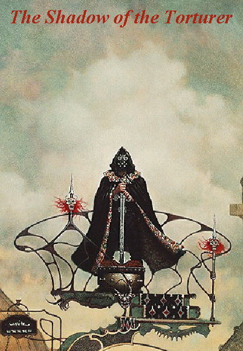

Literary Science Fictionby Jason Voegele[ Discussion Forum | Comments | Related Links ] |
|  |
|
This page is here to promote the idea that science fiction can be more than just the juvenile, escapist literature that it is often perceived to be. Science fiction's greatest achievements stand among the greatest works of the century. Nevertheless, there are very few science fiction novels that are recognized for their brilliance. The few that have achieved some mainstream recognition have done so more because of the author's reputation outside of the field, rather than on their on terms. While Gene Wolfe's The Book of the New Sun has as much to offer the careful reader as, say, Ulysses or Moby Dick, its refusal to cater to a mainstream audience has kept it from gaining a wide-spread audience, or even a firm reputation in the academic world. Wolfe has written a true masterpiece, only to have this praise qualified as "a masterpiece of science fiction" as if this were all a great work of science fiction could possibly achieve. The Book of the New Sun is unapolagetically a work of pure genre science fiction, and this has undoubtedly led to its literary ghettoization.
I use Wolfe's masterwork as an example, but the same could be said for many of science fictions greater achievements, including most of those listed below, in my "all time top ten" list.
That said, here are my ten favorite science fiction books:
"What struck me on the beach--and it struck me indeed, so that I staggered as at a blow--was that if the Eternal Principle had rested in that curved thorn I had carried about my neck across so many leagues, and if it now rested in the new thorn (perhaps the same thorn) I had only now put there, then it might rest in everything, in every thorn in every bush, in every drop of water in the sea. The thorn was a sacred Claw because all thorns were sacred Claws; the sand in my boots was sacred sand because it came from a beach of sacred sand. The cenobites treasured up the relics of the sannyasins because the sannyasins had approached the Pancreator. But everything had approached and even touched the Pancreator, because everything had dropped from his hand. Everything was a relic. All the world was a relic. I drew off my boots, that had traveled with me so far, and threw them into the waves that I might not walk shod on holy ground."
--The Citadel of the Autarch, Gene Wolfe.
{kind=link}